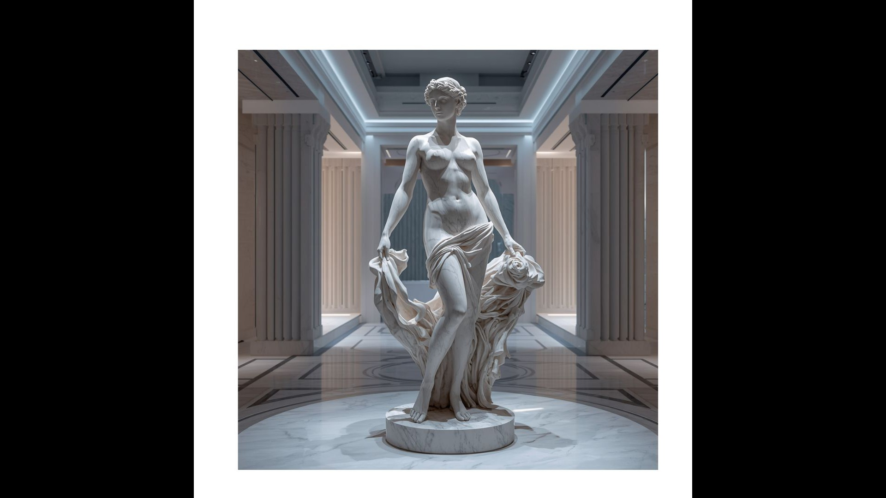

Αίθουσα Α · Γλυπτική
Hall A · Sculpture
Αφροδίτη, αναγεννημένη
Aphrodite, Reborn
Μια αλγοριθμική παραλλαγή της Αφροδίτης της Μήλου σε ψηφιακό μάρμαρο.
An algorithmic variation on the Aphrodite of Milos in digital marble.
Δείτε το έκθεμα →View the piece →